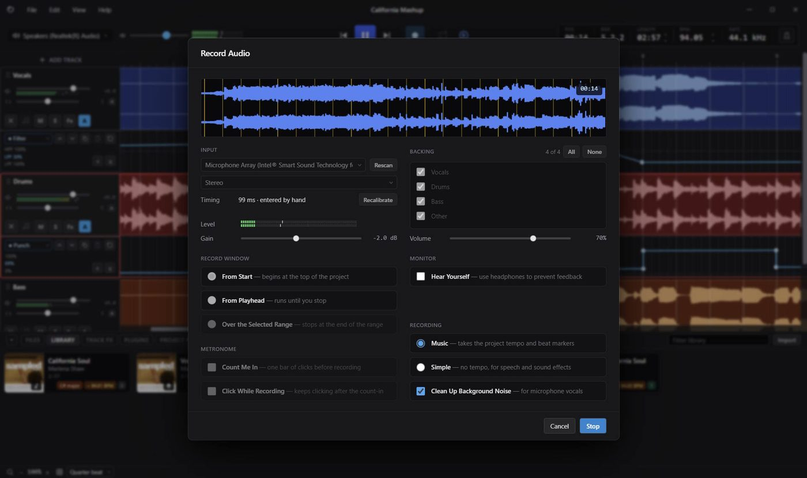
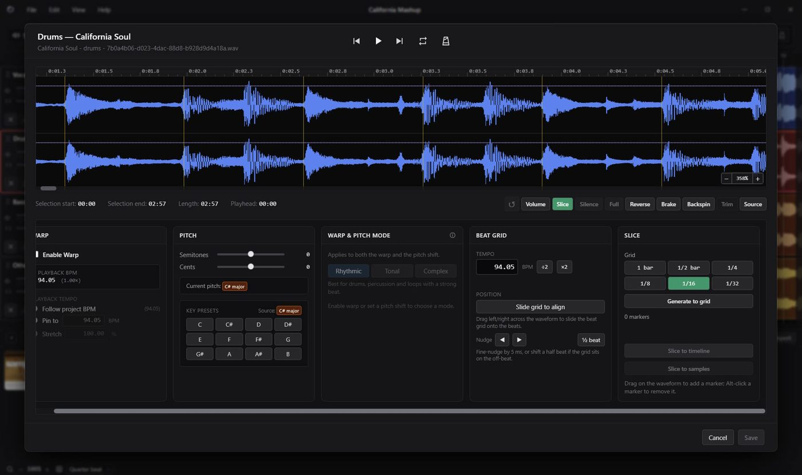
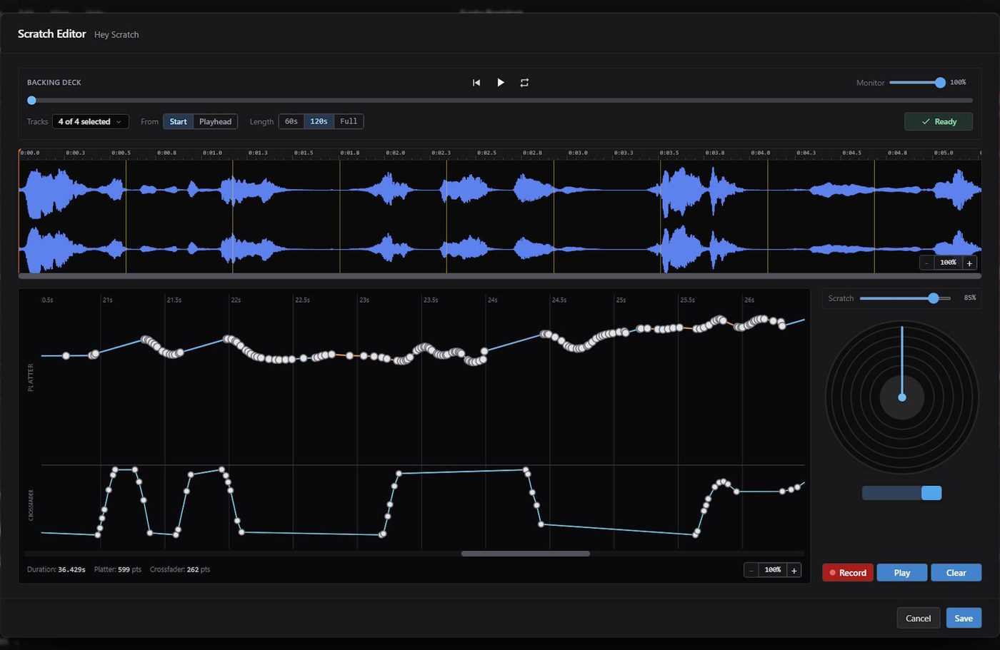
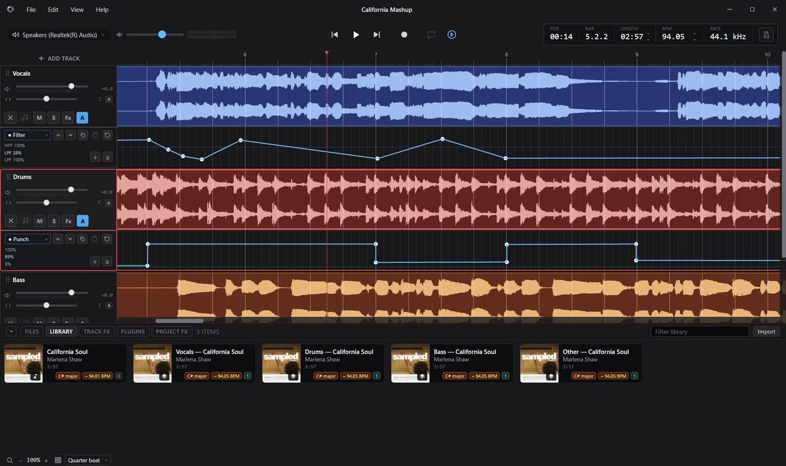

推荐 · 大多数用户
01
完整汉化版
适合：第一次安装 Silverdaw，或希望打开就是中文界面。
- 基准版本
- 官方 1.9.0
- 中文资源
- 已内置，无需补丁
- 安装形式
- 安装包 / 便携版
- 下载后直接安装或解压
- 打开即为中文界面
- 开源免费发布，AGPL-3.0
基于官方 1.9.0 · Windows · 腾讯云直链
Silverdaw
完整中文本地化
菜单 · 面板 · 提示 · 报错
选择版本 / Choose edition
完整汉化版与汉化补丁的基准版本不同，不能混用。第一次使用选完整版；已经装了官方 1.10.0 原版，才需要补丁。
适合：第一次安装 Silverdaw，或希望打开就是中文界面。
基于官方 1.9.0 · Windows · 腾讯云直链
适合：已安装官方原版 1.10.0，想保留现有安装。
技术支持：鲸世一梦 · 仅适配 1.10.0
不确定选哪个？ 如果电脑里还没有 Silverdaw，下载完整汉化版。只有已经装了官方 1.10.0 原版，才需要补丁。
更新说明：完整汉化版将在 2027 年 1 月前停止跟随官方原版更新；已发布版本仍可继续下载使用。详见 公告栏。

录音面板提供三种起点：工程开头、播放头位置，或仅录制所选区间。是否启用一小节预备拍、录制期间节拍器是否继续、是否开启自身监听，均以勾选项控制。
录制模式可选择跟随工程的速度与节拍，也可切换为不对齐节拍的纯时间模式。启用底噪清理后，可针对人声中的环境噪声单独处理。

片段编辑器支持按小节、半小节或更细的网格切分音频，切分结果可直接放回时间线，也可另存为新的采样。
音高可按半音与音分微调，并提供调性预设以便快速切换；速度通过时间拉伸处理，分节奏型、调性、复杂三种模式。原始音频文件不会被改动，所有设置仅保存于工程中。

Scratch 编辑器上方曲线记录唱盘转速，下方曲线记录横推开合。用鼠标绘制轨迹后，软件即按该轨迹回放，无需实际唱机即可完成。
确认曲线后开始录制，该动作会被渲染为实际音频并保存至素材库，随后可作为普通片段继续编排。

轨道参数旁均可编辑自动化曲线，滤波截止频率与 Punch 强度可随时间连续变化，无需在某一点做突变处理。
每条轨道可加载独立效果器，也可经发送进入工程级混响与延迟统一处理；整首工程可导出为单个立体声文件。

Localization / 中文界面
汉化并非隐藏英文界面，而是将所有应显示中文的位置完整替换，使首次使用的用户无需另行查阅术语。
本页截图取自软件原版（英文界面），用于说明各功能的位置与界面结构。汉化版对应的界面元素已替换为中文，位置保持不变。
Download / 获取方式
希望直接使用中文界面，请下载完整汉化版；已持有官方原版 1.10.0，可单独取用汉化补丁；只需对照原文或自行配置，请前往官网下载官方原版。
已内置中文语言资源，安装后打开即为中文界面，无需任何额外操作，适合希望直接使用的用户。
基于官方 1.9.0 · 安装包 / 便携版
以官方原版 1.10.0 为基准制作，仅适配该版本。补丁不是可直接执行的安装程序，需要具备一定技术基础，并借助相应工具手动完成文件替换，因此仅作为参考提供。
技术支持：鲸世一梦 · 下载包含补丁与使用说明
官方发布的原始安装包，界面为英文，未作任何改动。需要对照原文、自行配置或叠加汉化补丁，均以此版本为基础。
官方原始版本，未经修改
Specs / 规格
Silverdaw 是一款免费开源的数字音频工作站（DAW），专为 Remix、Mashup 和以采样为核心的音乐创作而做。导入现成的音频或自己录制，然后编排、裁剪、变调、对齐速度，最终混成一首完整的作品。
Silverdaw is an open-source DAW for remixing, mashups, and sample-driven music making. Import audio or record your own, then arrange, trim, re-pitch, and tempo-match it into a finished mix.
介绍文案取自 Silverdaw 官网 silverdaw.com
补丁包仅适配官方原版 1.10.0，需按说明手动替换文件。两项可同时勾选，也可只选其一。